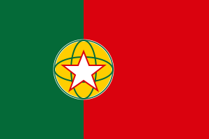

Flash-card quizzes to build your Portuguese vocabulary — boa sorte!
Portuguese has roughly 260 million speakers and is an official language in nine countries across four continents — Portugal, Brazil (by far the largest Portuguese-speaking population), Angola, Mozambique, Cape Verde, Guinea-Bissau, São Tomé and Príncipe, Timor-Leste and Equatorial Guinea.
Every language deck on Flashlingo comes in three levels, so you can start where you actually are instead of where a textbook assumes you are.
Olá (hello), Obrigado / Obrigada (thank you — the ending changes with the speaker's gender), Por favor (please), Sim / Não (yes / no), and Tchau (bye, informal) will carry you through most everyday moments.
This deck sticks to vocabulary that's widely understood in both, so you can start here and specialize in accent and regional words later, once you know which variety you need.
Very similar in writing, less so when spoken — a Spanish speaker can often read Portuguese fairly well but struggle to follow it spoken at natural speed.
The large majority — Brazilian Portuguese accounts for the biggest share of speakers worldwide, so this deck leans toward vocabulary that works there while staying understandable in Portugal too.